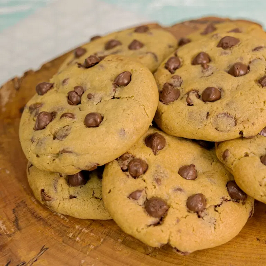

Receitas Favoritas
Aqui estão algumas das minhas receitas preferidas para compartilhar com vocês. Clique na seta ao lado de cada receita para ver o passo a passo.
Mousse de Maracujá (Receita do Prof. Pablo) open_in_newBolo de Caneca

Ingredientes
- 1 ovo
- 4 colheres de sopa de leite
- 3 colheres de sopa de óleo
- 4 colheres de sopa de açúcar
- 4 colheres de sopa de farinha de trigo
- 2 colheres de sopa de chocolate em pó
- 1 colher de café de fermento em pó
Modo de Preparo
- Em uma caneca grande, misture o ovo, o leite e o óleo.
- Adicione o açúcar, a farinha e o chocolate em pó, mexendo até obter uma massa homogênea.
- Acrescente o fermento e misture delicadamente.
- Leve ao micro-ondas por aproximadamente 3 minutos.
- Aguarde esfriar um pouco e sirva.
Cookies

Ingredientes
- 2 xícaras de farinha de trigo
- 1/2 xícara de manteiga em temperatura ambiente
- 1/2 xícara de açúcar
- 1 ovo
- 1 colher de chá de essência de baunilha
- 1 xícara de gotas de chocolate
Modo de Preparo
- Misture a manteiga e o açúcar até formar um creme.
- Adicione o ovo e a essência de baunilha, misturando bem.
- Acrescente a farinha de trigo aos poucos.
- Adicione as gotas de chocolate e misture até incorporar.
- Faça pequenas bolas de massa e distribua em uma assadeira.
- Asse em forno preaquecido a 180°C por cerca de 12 a 15 minutos.
- Deixe esfriar antes de servir.
Sorvete de Banana

Ingredientes
- 4 bananas maduras congeladas
- 2 colheres de sopa de leite (opcional)
- Canela em pó a gosto (opcional)
Modo de Preparo
- Corte as bananas em rodelas e congele por pelo menos 4 horas.
- Coloque as bananas congeladas no liquidificador ou processador.
- Bata até obter uma textura cremosa de sorvete.
- Se necessário, adicione o leite para facilitar o processamento.
- Acrescente canela a gosto e misture.
- Sirva imediatamente ou leve ao congelador por alguns minutos para firmar mais.
Bife à Parmegiana

Ingredientes
- 4 bifes de carne (alcatra, coxão mole ou patinho)
- Sal e pimenta-do-reino a gosto
- 2 dentes de alho amassados
- 2 ovos
- 1 xícara de farinha de rosca
- 1 xícara de farinha de trigo
- Óleo para fritar
- 1 xícara de molho de tomate
- 200 g de queijo muçarela fatiado
- Queijo parmesão ralado a gosto
Modo de Preparo
- Tempere os bifes com sal, pimenta e alho.
- Passe os bifes na farinha de trigo, depois nos ovos batidos e, por último, na farinha de rosca.
- Frite os bifes em óleo quente até dourarem dos dois lados.
- Coloque os bifes em uma assadeira e cubra com o molho de tomate.
- Distribua as fatias de muçarela por cima e polvilhe queijo parmesão.
- Leve ao forno preaquecido a 200°C por cerca de 15 minutos, ou até o queijo derreter e gratinar.
- Retire do forno e sirva quente.
Arroz à Piamontese

Ingredientes
- 2 xícaras de arroz cozido
- 1 colher de sopa de manteiga
- 1 cebola pequena picada
- 200 g de champignon fatiado
- 1 caixa de creme de leite
- 1/2 xícara de leite
- 50 g de queijo parmesão ralado
- Sal a gosto
- Salsa picada a gosto
Modo de Preparo
- Em uma panela, derreta a manteiga e refogue a cebola até ficar transparente.
- Adicione os champignons e refogue por mais alguns minutos.
- Acrescente o creme de leite, o leite e o queijo parmesão, mexendo até formar um molho cremoso.
- Tempere com sal a gosto.
- Adicione o arroz cozido e misture bem para incorporar o molho.
- Cozinhe por 2 a 3 minutos em fogo baixo, mexendo delicadamente.
- Finalize com salsa picada e sirva acompanhado do bife à parmegiana.